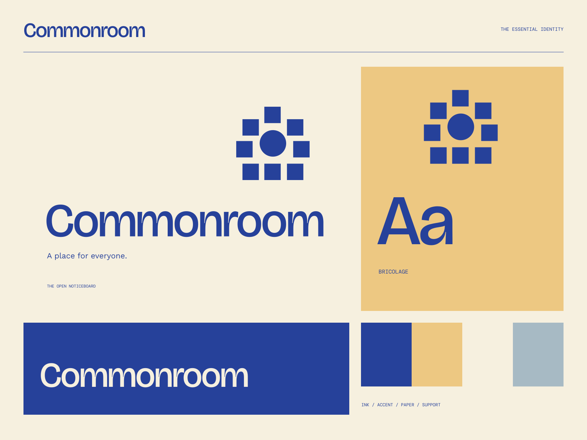

01
A space to meet
A useful neighborhood place for conversation and new connections.
YOUR NEIGHBORHOOD / YOUR SHARED SPACE
A place for everyone. A shared space for different people.
A coherent little world
A shared space for different people. A place for everyone.
01
A useful neighborhood place for conversation and new connections.
02
A thoughtful program that welcomes different interests.
03
A community gets better when more perspectives can be heard.

The point of view
Overlapping civic tickets, a communal-table emblem, bold blue notices, and deeply human editorial type. The information feels public, legible, and worth showing up for.